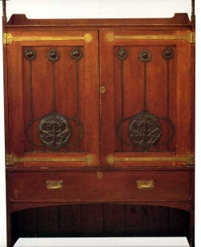
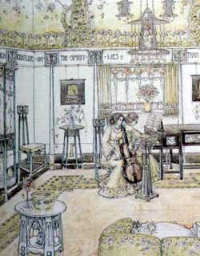

The Scottish movement occurred in the late 1880's and 90's, more than 20 years after Morris had established his first shop in London. The Glasgow School of Art (GSA) was the centre of the Arts and Crafts movement in Scotland. Four key figures, Charles Rennie Mackintosh, Herbert MacNair, Margaret and Frances MacDonald were known as 'The Four' who together created the vision which became world famous as the Glasgow Style.
Mackintosh attended the Glasgow School of Art in 1883 and became a trainee architect in the following year. In 1884 Francis Newberry took over as the headmaster of GSA and became a vital influence in the development of the movement. Newberry had recently moved from London and brought with him an interest in Arts and Crafts and an admiration of William Morris. Newberry provided leadership for the development of the Glasgow School of Art, pushing it forward from its traditional role of formal instruction in painting by introducing a range of crafts including pottery, embroidery, metalwork, stained glass and woodcarving. He started the Art Club, organised exhibitions, and promoted the work of his students who included Mackintosh, encouraging them to be creative and to take an interest in the development Arts and Crafts in England and Europe.
Glasgow Style

Working together The Four, with the support of Newberry, compiled an exhibition of beaten metalwork panels, posters, furniture and silverwork for the 1896 Arts and Crafts Exhibition in London. Their work was not particularly well liked, but one important critic, Gleeson White, editor of The Studio was intrigued by the style and travelled to Glasgow to meet them, in the following year he published two articles in The Studio celebrating the Glasgow Style.
The style which The Four developed was not to everyone's taste, being derided as 'The Spook School' because of the ghostly ghoulish images portraying 'hobgoblins by misty moonlight'. An important element of Glasgow style was the importance of Celtic imagery, with motifs and style of lettering inspired by carvings on seventeenth century tombstones. A very popular motif was a cabbage like rose, the 'Glasgow Rose' which was adapted from Aubrey Beardsley and employed widely within Glasgow Style design. The Glasgow Rose was also adopted by English designers of stained glass, and furniture. Shapland and Petter, the Barnstaple furniture manufacturers providing some particularly good examples in marquetry, carving and in repousse copper panels. See the examples shown in Collecting
Charles Rennie Mackintosh

The life and work of Rennie Mackintosh, like William Morris was of enormous significance in the development of the Arts and Crafts style, and too expansive a subject to cover here. (Please see the GSA website for more information). For his work in architecture he is known particularly for the extension to the Glasgow School of Art which was started in 1898, and for houses such as the Hill House and Windyhill. His interior design and furniture is perhaps best known for his designs for the Tea Rooms in Glasgow which he did for Catherine Cranston in Buchanan Street in 1896 ( see design above), Argyle Street in 1897 and the Willow Tea Rooms in 1900. His furniture and his interiors show a unique and beautiful vision and are revered throughout the world. It is hard to identify anyone before or since Mackintosh who has shown the same creative genius within the field of Arts and Crafts.
The works of Mackintosh are beyond the realms of most collectors though there are prints and replicas available as well as a range of Mackintosh inspired copper, silver and pewter items, sometimes referred to as 'Mockintosh'.
Important Scottish designers

George Walton who assisted Mackintosh in the design of the tea rooms for Miss Cranston, and who also may have designed for Liberty & Co is one of the most significant designers along with Earnest Archibald Taylor, George Logan and John Ednie who designed for the furniture company Wylie and Lochhead. Other designers created artwork, illustrations, designs for furniture, jewellery, stained glass and their pieces are not uncommon in auction rooms and specialist dealers.
An important aspect of the Glasgow Style was the role played by women the most notable being the sisters Frances and Margaret MacDonald. Important designers include Jessie King illustrator and designer, Margaret and Mary Gilmour who designed and crafted metalwork, and Ann MacBeth an embroiderer. The 'Glasgow Girls:' by Jude Burkhauser is essential reading on the subject. See our page on Women and Arts and Crafts.